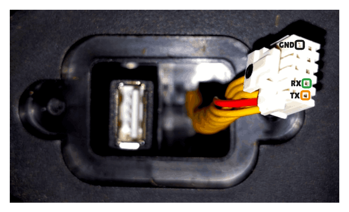

Certificate Unpinning on Ecovacs Goat
⚠️ Disclaimer:
Accessing and modifying your
Ecovacs Goatis risky and may permanently damage your device. These steps will void your warranty, may violate your terms of service, and Ecovacs will likely refuse support for modified devices. Proceed entirely at your own risk!Double check all params. This instruction was tested on
Goat O500. If you have another model, details may differ.
🟢 Simple Certificate Replacement
This method only updates certificate files on the device.
No firmware unpacking or flashing is required.
1. Start UART Console (on host)
Connect to the Goat UART serial port.
Adjust parameters as needed:
/dev/ttyACM0: device name may differ--log / --log-file: optional, remove if you do not want logs
picocom /dev/ttyACM0 --flow n --baud 115200 --log ./b-capture-"$(date --iso-8601=seconds)".log
tio /dev/ttyACM0 --flow none -b 115200 --log --log-file ./b-capture-"$(date --iso-8601=seconds)".log
| UART - Goat O500 Panorama |
|---|
 |
Pinout (O500):
| 1/6 | 2/7 | 3/8 | 4/9 | 5/10 |
|---|---|---|---|---|
| 5V (RED) | NC | NC | NC | GND |
| UART TX | UART RX | NC | NC | NC |
⚠️ Never connect the 5V pin to your UART adapter.
2. Interrupt Boot and Enter Hobot (on Goat)
During power-up, interrupt the boot process to enter Hobot (press any key).
Note
On some Goat you need to hit a specific key mentioned during the boot-up process like:
Hit key to stop autoboot('CTRL+C'): 0
Sometime picocom is not working and in that case you can try minicom. You can keep pressed your key (eg. CTRL+C) during the boot process until it's interropted.
minicom -D /dev/ttyUSB0 -b 115200
3. Locate the eMMC and userdata Partition
Unlike older Ecovacs bots, Goat devices do not allow modifying bootargs
to drop into Linux.
All changes are performed from U-Boot by directly accessing the eMMC.
3.1 Select eMMC Device
Device 0 is typically the internal eMMC.
# List all MMC devices
mmc list
# Select the device marked as eMMC (usually device 0)
mmc dev 0
Check write-protection status:
# Display eMMC details and write protection status
mmc info
Expected output:
Boot area 0 is not write protected
3.2 Identify userdata Partition
List partitions:
mmc part
On Goat O500, userdata is typically:
- Partition 16 (hex
0x10→mmc 0:10)
Verify filesystem access:
# List root directory of userdata partition
ext4ls mmc 0:10 /
You should see directories such as /certs.
3.3 Verify Existing Certificate Location
Before writing anything, confirm that the existing certificate file exists and is readable.
Note
If UART logging is enabled, the original certificate contents will also be captured in the UART log, which effectively serves as a backup.
# Load existing certificate into RAM
ext4load mmc 0:10 0xc2600000 /certs/master.pem
# Dump loaded content to verify correctness
md.b 0xc2600000 <FILE-SIZE-HEX>
# Optional: inspect full CA bundle
# ext4load mmc 0:10 0xc2600000 /certs/ca-certificates.crt
4. Replace Certificates (on Goat)
The replacement is done by:
- Injecting the new certificate into RAM via UART
- Writing it back into the
userdatapartition
4.1 Prepare Host Environment (on host)
python3 -m venv .venv
source .venv/bin/activate
pip install pyserial
4.2 Python UART Loader (on host)
This script:
- injects a PEM certificate into RAM at
0xC2600000 - calculates the exact byte size
- prints the
ext4writecommand for U-Boot
import time
import serial
uart_port = "/dev/ttyACM0" # CHANGE THIS
baud_rate = 115200
# userdata partition index (0x10 → mmc 0:10)
dev_part = 10
address = 0xC2600000
# Replace with your own PEM certificate
pem = """-----BEGIN CERTIFICATE-----
<YOUR CERTIFICATE HERE>
-----END CERTIFICATE-----"""
data = pem.encode("utf-8")
size = len(data)
commands = []
i = 0
while i + 4 <= size:
word = int.from_bytes(data[i : i + 4], "little")
commands.append(f"mw.l {address:#010x} 0x{word:08x} 1")
address += 4
i += 4
while i < size:
commands.append(f"mw.b {address:#010x} 0x{data[i]:02x} 1")
address += 1
i += 1
ser = None
try:
ser = serial.serial_for_url(
uart_port,
baud_rate,
timeout=0.1,
bytesize=8,
parity="N",
stopbits=1,
rtscts=False,
xonxoff=False,
do_not_open=True,
)
ser.dtr = None
ser.rts = None
ser.exclusive = False
ser.open()
time.sleep(2)
print(f"Connected to {uart_port} at {baud_rate} baud.")
print("Writing... (takes time)")
for cmd in commands:
ser.write(cmd.encode("utf-8") + b"\n")
ser.flush()
time.sleep(0.005)
except serial.SerialException as e:
print(f"UART error: {e}")
finally:
if ser and ser.is_open:
ser.close()
print("UART connection closed.")
print(f"\nTotal size (hex): 0x{size:x}")
print(f"Verify load: md.b 0xC2600000 0x{size:x}")
print(f"Write: ext4write mmc 0:{dev_part} 0xC2600000 /certs/master.pem 0x{size:x}")
4.3 Write Certificate to eMMC (on Goat)
Execute the printed command in U-Boot:
# Write injected certificate from RAM into userdata
ext4write mmc 0:10 0xC2600000 /certs/master.pem <FILE-SIZE-HEX>
Verify write success:
# Reload certificate from eMMC
ext4load mmc 0:10 0xc2600000 /certs/master.pem
# Compare with injected content
md.b 0xc2600000 <FILE-SIZE-HEX>
5. Reboot
reset
The Goat now trusts your custom CA.
📝 Notes
- Always backup your data before making changes.
- Firmware updates or factory resets may overwrite certificates.
- For certificate creation, see Create Certificates.
- For more context, see Architecture and App Certificate Unpinning.
📚 References
- https://dontvacuum.me/talks/37c3-2023/37c3-vacuuming-and-mowing.pdf
- https://dontvacuum.me/talks/DEFCON32/DEFCON32_reveng_hacking_ecovacs_robots.pdf
- https://media.ccc.de/v/37c3-11943-sucking_dust_and_cutting_grass_reversing_robots_and_bypassing_security#t=2028
- https://github.com/itsjfx/ecovacs-hacking/blob/master/x1_omni.md
- https://dontvacuum.me/